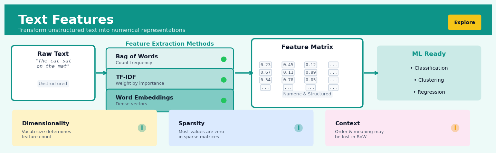

Text Features#


The biggest mistake I see is treating all text features equally when TF-IDF and word embeddings capture fundamentally different information. Bag of Words is great for keyword-driven tasks like spam detection, but if you need semantic understanding like sentiment analysis or document similarity, you need embeddings that preserve meaning. Always match your feature extraction method to whether your task depends on keywords or context.
The 60-Second Version#
What it does: Converts words and sentences into numbers so machine learning models can find patterns in text data.
When to use it: You have customer reviews, support tickets, survey responses, emails, or social media posts that you want to analyse at scale or use for prediction.
What you get back: A spreadsheet-like table where each row represents a document and each column captures something measurable about the text—word frequencies, topics, sentiment indicators, or semantic patterns—that your model can learn from.
Difficulty |
Moderate |
Typical runtime |
Seconds to minutes on 100K documents |
What you bring |
A column of text (any length, any format) |
What you get |
Fixed-width numerical vectors, one per document |
Heuristix bucket |
Explore — Shaping & Transforming Data |
The choice of text features determines what patterns your model can possibly learn—no feature for sentiment means the model stays blind to emotion, regardless of algorithm sophistication.
Learning Objectives#
After reading this chapter, a business user will be able to:
Identify opportunities where text features can extract value from customer reviews, support tickets, survey responses, and other unstructured text data sources in your organisation.
Interpret TF-IDF scores, word embedding visualisations, and n-gram frequency tables to explain which words and phrases distinguish different customer segments or predict key outcomes.
Decide whether additional text preprocessing (stemming, stopword removal, entity extraction) is worth the engineering effort based on model performance metrics and business impact.
After reading this chapter, a data scientist will be able to:
Implement bag-of-words, TF-IDF, and word embedding approaches using scikit-learn and gensim, correctly handling tokenisation, vocabulary size limits, rare words, and out-of-vocabulary terms.
Tune n-gram ranges, minimum document frequency thresholds, maximum features, and embedding dimensions by evaluating their impact on model sparsity, computational cost, and downstream task performance.
Diagnose when text features fail due to domain shift, vocabulary mismatch, or inadequate corpus size, and apply appropriate remediation strategies including domain-specific embeddings or feature augmentation.
Overview#
Text features are numerical representations derived from unstructured textual data that enable machine learning algorithms to process and analyse natural language. The core purpose of text feature engineering is to transform variable-length character sequences into fixed-dimensional vector spaces while preserving semantic, syntactic, and statistical properties relevant to the modelling task. This family of methods spans classical frequency-based approaches (bag-of-words, TF-IDF), distributional semantics (word embeddings, document vectors), and structural extraction techniques (n-grams, regex patterns, named entities).
When to Use This#
Use text features when:
Customer feedback analysis: You have survey responses, reviews, or support tickets and need to predict satisfaction scores, identify churn risk, or route cases to appropriate teams based on textual content.
Document classification: You need to categorise contracts, claims, articles, or emails into predefined categories for compliance, triage, or organisation purposes.
Sentiment and opinion mining: Marketing or product teams require quantitative measures of brand perception extracted from social media posts, forum discussions, or review platforms.
Search and information retrieval: You are building recommendation systems or search functionality that must match queries to documents based on semantic similarity rather than exact keyword matches.
Entity extraction for structured analytics: Unstructured text contains valuable entities (product names, monetary amounts, dates, locations) that must be extracted and converted to structured fields for downstream analysis.
Fraud detection with textual signals: Claims descriptions, transaction notes, or user-generated content may contain linguistic patterns indicative of fraudulent behaviour.
Topic discovery and summarisation: Large document corpora require unsupervised exploration to identify dominant themes, emerging trends, or content clusters.
Do NOT use text features when:
Text is extremely short and sparse: Single words or codes (e.g., stock tickers, product SKUs) are better handled as categorical variables with standard encoding techniques.
Structured alternatives exist: If the information is already available in structured form (dates, currencies, identifiers), extracting it from text introduces unnecessary noise and complexity.
Language is highly specialised without domain adaptation: Off-the-shelf text features may fail catastrophically on domain-specific jargon (medical, legal, scientific) without appropriate preprocessing or custom vocabularies.
Questions This Answers#
Understanding Customer Voice and Sentiment#
Why are our product reviews suddenly more negative this month compared to last quarter?
Which specific complaints are driving customers to churn — is it pricing, service quality, or product features?
Are customers in our enterprise segment talking about different pain points than SMB customers in their support tickets?
What themes keep appearing in our NPS feedback that we’re not addressing in our roadmap?
Can we predict which support tickets will escalate to complaints before they do?
Improving Operational Efficiency#
How many hours are our agents spending on routine inquiries that could be automated?
Which customer emails should our senior team handle versus our junior support staff?
Are we routing technical versus billing questions to the right departments based on the initial contact?
What’s causing the 40% increase in “urgent” tagged messages — are customers actually more urgent or just using that word more?
Which knowledge base articles should we create next based on what customers are actually asking about?
Targeting and Personalization#
Can we identify which prospects are most likely to respond to our outreach based on their LinkedIn descriptions?
Should we send different email campaigns to customers based on how they describe their business challenges?
Which customer segments should we prioritize for our new product launch based on their historical feedback patterns?
Are the pain points mentioned in won deals different from those in lost opportunities, and how should that change our messaging?
How It Works#
Imagine you’re a chef trying to teach a robot to recognize recipes, but the robot can only understand numbers, not words. When you show it “chocolate chip cookies,” the robot sees meaningless symbols. So you devise a clever system: you create a master inventory of every ingredient that exists—flour, sugar, chocolate, vanilla, cinnamon—thousands of items. Now, when you hand the robot a recipe, you convert it into a shopping list with quantities: 2 cups flour, 1 cup sugar, 0 cups cinnamon (because this recipe has none), and so on. Suddenly the recipe becomes a long list of numbers the robot can compare, measure, and learn from. Two recipes that both use chocolate and vanilla will have similar number patterns, even if the original text looked completely different.
BEFORE: Raw Text Documents
┌─────────────────────────────────────┐
│ "The cat sat on the mat" │
│ "The dog played in the park" │
│ "A cat and a dog are friends" │
└─────────────────────────────────────┘
↓
Extract vocabulary
(unique words across all docs)
↓
┌─────────────────────────────────────┐
│ Vocabulary: [the, cat, sat, on, │
│ mat, dog, played, in, park, a, │
│ and, are, friends] │
└─────────────────────────────────────┘
↓
Count word occurrences in each doc
↓
AFTER: Numerical Feature Vectors
the cat sat on mat dog played ...
Doc1: [ 2, 1, 1, 1, 1, 0, 0 ...]
Doc2: [ 2, 0, 0, 0, 0, 1, 1 ...]
Doc3: [ 0, 1, 0, 0, 0, 1, 0 ...]
└─────────────────────────────┘
Each document → fixed-length vector
Step 1: Collect your vocabulary. The system scans through all your text documents and makes a master list of every unique word (or word chunk) that appears anywhere. This becomes your feature dictionary—like column headers in a spreadsheet. If you have 5,000 unique words across all documents, you’ll create 5,000 columns.
Step 2: Create an empty counting table. For each document, the system prepares a row with one slot for every word in the vocabulary. Initially, every slot contains zero. This row will become that document’s numerical fingerprint.
Step 3: Count what appears. The system reads through the document word by word, and each time it sees a word from the vocabulary, it increments the corresponding counter. If “urgent” appears three times in an email, the “urgent” column gets the number 3. Words that never appear stay at zero.
Step 4: Apply weighting (optional but common). Raw counts can be misleading because common words like “the” appear everywhere. Many systems adjust the counts to emphasize words that are distinctive—frequent in this document but rare across others. This reweighting makes meaningful words stand out while downplaying noise.
Step 5: Lock in the vector. Once counting finishes, each document has been transformed from flowing text into a fixed-length list of numbers. Every document, whether it’s three words or three thousand, becomes a vector of exactly the same length—the size of your vocabulary.
The key insight: By representing text as counts (or weighted counts) of vocabulary words, we transform the fuzzy, variable-length nature of language into structured numerical data that reveals which documents talk about similar topics through their overlapping word patterns.
The Intuition#
Imagine you are a librarian who must organise thousands of books without reading them cover to cover. Instead, you develop a system: count how often certain words appear, note which words are common across all books versus unique to specific volumes, and identify recurring phrases that signal particular topics. A book mentioning “derivative,” “portfolio,” and “yield” frequently belongs in the finance section, while one dominated by “plaintiff,” “statute,” and “jurisdiction” goes to law. You are not understanding the books—you are creating numerical fingerprints that capture their essential character.
This fingerprinting process lies at the heart of text feature engineering. The simplest approach, the bag-of-words model, treats each document as an unordered collection of words and counts their occurrences. This discards word order entirely—“dog bites man” becomes identical to “man bites dog”—yet remains remarkably effective for many classification tasks because the presence and frequency of particular words often suffices to distinguish categories. The vocabulary across all documents defines the feature space, and each document becomes a point in this high-dimensional space based on its word counts.
The limitation of raw counts is that common words like “the,” “and,” or “is” dominate the representation despite carrying little discriminative information. Term Frequency-Inverse Document Frequency (TF-IDF) addresses this by weighting each term by how rare it is across the corpus. A word appearing in every document receives near-zero weight, while a word appearing in only a handful of documents receives high weight—precisely because its presence signals something distinctive about those documents. This reweighting transforms a raw fingerprint into a discriminative signature that emphasises what makes each document unique.
Beyond counting, modern approaches recognise that words have relationships. “King” and “queen” are related; “excellent” and “terrible” are opposites; “bank” means different things in different contexts. Distributional embeddings capture these relationships by positioning words in continuous vector spaces where geometric distance reflects semantic similarity. A document’s representation then becomes a combination of its constituent word vectors, enabling algorithms to recognise that “outstanding customer service” and “exceptional client support” express similar sentiments despite sharing no words.
The Mathematics#
Notation and Problem Setup#
Let \(\mathcal{D} = \{d_1, d_2, \ldots, d_N\}\) denote a corpus of \(N\) documents. Each document \(d_i\) is a sequence of tokens \((w_{i,1}, w_{i,2}, \ldots, w_{i,n_i})\) where \(n_i\) is the length of document \(i\). The vocabulary \(\mathcal{V} = \{v_1, v_2, \ldots, v_V\}\) contains all unique terms across the corpus, with \(|\mathcal{V}| = V\).
Our objective is to construct a mapping \(\phi: \mathcal{D} \rightarrow \mathbb{R}^d\) that transforms each document into a \(d\)-dimensional feature vector suitable for downstream machine learning.
Bag-of-Words Representation#
The term frequency of term \(v_j\) in document \(d_i\) is:
where \(\mathbb{1}[\cdot]\) is the indicator function. The bag-of-words representation is:
Assumptions:
Word order is irrelevant (exchangeability assumption)
Each word occurrence is an independent observation
The vocabulary is fixed and known a priori
TF-IDF Weighting#
The document frequency of term \(v_j\) counts how many documents contain it:
The inverse document frequency provides a measure of term specificity:
The additive constant prevents zero weights and varies by implementation. The TF-IDF weight combines local and global statistics:
Normalisation: To account for document length variation, vectors are typically \(\ell_2\)-normalised:
Sublinear Term Frequency Scaling#
Raw term frequency can overweight repeated terms. A sublinear scaling dampens this effect:
N-gram Extensions#
An \(n\)-gram is a contiguous sequence of \(n\) tokens. For bigrams (\(n=2\)), the vocabulary expands to include pairs:
The feature space grows combinatorially: \(|\mathcal{V}^{(2)}| \leq V^2\), though sparsity limits actual vocabulary size. N-grams partially recover word order and capture phrases (“New York,” “not good”).
Word Embeddings and Document Vectors#
Word embeddings map terms to dense vectors: \(\mathbf{e}: \mathcal{V} \rightarrow \mathbb{R}^k\) where \(k \ll V\) (typically \(k \in [50, 300]\)).
A simple document embedding aggregates word vectors:
TF-IDF-weighted averaging improves upon uniform averaging:
Cosine Similarity#
The similarity between document vectors is typically measured via cosine similarity:
where \(\theta\) is the angle between vectors. This ranges from \(-1\) (opposite) to \(1\) (identical direction), with \(0\) indicating orthogonality.
Edge Cases and Degeneracies#
Empty documents: When \(n_i = 0\), all features are zero. Handle explicitly or impute.
Out-of-vocabulary terms: Terms absent from training vocabulary have no representation. Options include ignoring, mapping to a special token, or using subword methods.
Single-document terms: When \(\text{df}(v_j) = 1\), TF-IDF assigns maximum weight. Consider minimum document frequency thresholds.
Identical IDF values: When \(N = \text{df}(v_j)\) for all terms, TF-IDF reduces to term frequency (plus constant).
Relationship to Latent Semantic Analysis#
The TF-IDF document-term matrix \(\mathbf{X} \in \mathbb{R}^{N \times V}\) admits a singular value decomposition:
Truncating to \(k\) components yields a low-rank approximation that captures latent semantic structure. This connects bag-of-words representations to topic models and dimensionality reduction.
Understanding the Mathematics#
Term Frequency (TF)#
The equation: $\(\text{TF}(t, d) = \frac{f_{t,d}}{\sum_{t' \in d} f_{t',d}}\)$
Read it aloud: “The term frequency of a word in a document equals the number of times that word appears, divided by the total number of all words in the document.”
What each symbol means:
\(\text{TF}(t, d)\) = term frequency score for word \(t\) in document \(d\)
\(f_{t,d}\) = raw count of how many times word \(t\) appears in document \(d\)
\(\sum_{t' \in d} f_{t',d}\) = sum of all word counts in document \(d\) (total words)
A concrete numerical example: A customer review reads: “Fast delivery! Fast service! Great product overall.”
“Fast” appears 2 times
Total words in review = 6
\(\text{TF}(\text{"fast"}, \text{review}) = \frac{2}{6} = 0.333\)
Meanwhile “great” appears once: \(\text{TF}(\text{"great"}, \text{review}) = \frac{1}{6} = 0.167\)
Why this equation matters: Without normalization, longer documents would artificially dominate shorter ones—a 10,000-word article mentioning “refund” twice would overshadow a 20-word complaint mentioning it once.
Inverse Document Frequency (IDF)#
The equation: $\(\text{IDF}(t) = \log\left(\frac{N}{n_t}\right)\)$
Read it aloud: “The inverse document frequency of a word equals the logarithm of the total number of documents divided by the number of documents containing that word.”
What each symbol means:
\(\text{IDF}(t)\) = inverse document frequency score for word \(t\)
\(N\) = total number of documents in the corpus
\(n_t\) = number of documents that contain word \(t\) at least once
\(\log\) = logarithm (dampens the scale of very large ratios)
A concrete numerical example: You analyze 10,000 customer support tickets.
The word “please” appears in 9,500 tickets
The word “refund” appears in 50 tickets
\(\text{IDF}(\text{"please"}) = \log\left(\frac{10000}{9500}\right) = \log(1.05) = 0.05\)
\(\text{IDF}(\text{"refund"}) = \log\left(\frac{10000}{50}\right) = \log(200) = 5.30\)
Why this equation matters: Rare words carry more signal than common ones—IDF ensures that discriminative terms like “refund” receive higher weight than filler words like “please” when classifying urgent tickets.
TF-IDF#
The equation: $\(\text{TF-IDF}(t, d) = \text{TF}(t, d) \times \text{IDF}(t)\)$
Read it aloud: “The TF-IDF score of a word in a document equals its term frequency in that document multiplied by its inverse document frequency across all documents.”
What each symbol means:
\(\text{TF-IDF}(t, d)\) = combined importance score for word \(t\) in document \(d\)
\(\text{TF}(t, d)\) = how prominent the word is in this specific document
\(\text{IDF}(t)\) = how distinctive the word is across the corpus
A concrete numerical example: Continuing our support ticket example:
A ticket says: “Need refund please refund now please help please”
\(\text{TF}(\text{"refund"}, \text{ticket}) = \frac{2}{7} = 0.286\)
\(\text{IDF}(\text{"refund"}) = 5.30\) (from earlier)
\(\text{TF-IDF}(\text{"refund"}, \text{ticket}) = 0.286 \times 5.30 = 1.52\)
Meanwhile for “please”:
\(\text{TF}(\text{"please"}, \text{ticket}) = \frac{3}{7} = 0.429\)
\(\text{IDF}(\text{"please"}) = 0.05\) (from earlier)
\(\text{TF-IDF}(\text{"please"}, \text{ticket}) = 0.429 \times 0.05 = 0.02\)
Why this equation matters: TF-IDF automatically surfaces the words that truly characterize each document—enabling search engines to rank relevant results and sentiment models to focus on meaningful signals rather than noise.
The Big Picture#
These three equations work together to solve a fundamental problem: converting messy text into numbers that preserve meaning. Raw word counts fail because they treat all words equally and penalize longer documents. TF normalizes for document length. IDF weights words by their rarity and therefore their discriminative power. Their product—TF-IDF—creates a numerical fingerprint where each dimension represents a word, and each value captures both local prominence and global distinctiveness. This mathematical framework transforms questions like “Which support tickets mention refunds?” into algebra we can solve at scale, enabling everything from search ranking to document classification to topic modeling.
Python Implementation#
import numpy as np
import pandas as pd
from sklearn.feature_extraction.text import CountVectorizer, TfidfVectorizer
from sklearn.model_selection import train_test_split
from sklearn.linear_model import LogisticRegression
from sklearn.metrics import classification_report
import re
# Sample corpus: customer reviews with sentiment labels
documents = [
"This product is absolutely fantastic. Best purchase I've made all year.",
"Terrible quality. Broke after one week. Complete waste of money.",
"Decent product for the price. Nothing special but does the job.",
"Amazing customer service. They resolved my issue immediately.",
"The worst experience ever. Never buying from this company again.",
"Good value for money. Would recommend to friends and family.",
"Product arrived damaged. Still waiting for replacement after a month.",
"Exceeded my expectations. Premium quality at an affordable price.",
"Not worth the money. Cheaply made and falls apart easily.",
"Outstanding quality and fast shipping. Very satisfied customer."
]
labels = [1, 0, 1, 1, 0, 1, 0, 1, 0, 1] # 1 = positive, 0 = negative
# Create DataFrame for clarity
df = pd.DataFrame({'text': documents, 'sentiment': labels})
print("Sample data:")
print(df.head())
print()
# ---------------------------------------------------------------------
# Example 1: Basic Bag-of-Words with CountVectorizer
# ---------------------------------------------------------------------
print("=" * 60)
print("EXAMPLE 1: Bag-of-Words (CountVectorizer)")
print("=" * 60)
# Configure CountVectorizer
# - lowercase: convert all text to lowercase
# - stop_words: remove common English words
# - min_df: ignore terms appearing in fewer than 2 documents
# - max_df: ignore terms appearing in more than 90% of documents
count_vectorizer = CountVectorizer(
lowercase=True,
stop_words='english',
min_df=2,
max_df=0.9,
ngram_range=(1, 1) # unigrams only
)
# Fit the vectorizer and transform documents
X_counts = count_vectorizer.fit_transform(df['text'])
# Examine vocabulary and feature matrix
print(f"Vocabulary size: {len(count_vectorizer.vocabulary_)}")
print(f"Feature matrix shape: {X_counts.shape}")
print(f"Feature names: {count_vectorizer.get_feature_names_out()}")
print(f"\nFirst document vector (sparse):\n{X_counts[0].toarray()}")
print()
# ---------------------------------------------------------------------
# Example 2: TF-IDF Vectorisation
# ---------------------------------------------------------------------
print("=" * 60)
print("EXAMPLE 2: TF-IDF Vectorisation")
print("=" * 60)
# Configure TfidfVectorizer
# - sublinear_tf: apply logarithmic scaling to term frequencies
# - norm: L2 normalisation of output vectors
# - ngram_range: include both unigrams and bigrams
tfidf_vectorizer = TfidfVectorizer(
lowercase=True,
stop_words='english',
min_df=1,
max_df=0.95,
ngram_range=(1, 2), # unigrams and bigrams
sublinear_tf=True, # use 1 + log(tf) instead of tf
norm='l2' # L2 normalise output vectors
)
# Fit and transform
X_tfidf = tfidf_vectorizer.fit_transform(df['text'])
print(f"Vocabulary size (with bigrams): {len(tfidf_vectorizer.vocabulary_)}")
print(f"Feature matrix shape: {X_tfidf.shape}")
print(f"\nSample feature names (first 15):")
print(list(tfidf_vectorizer.get_feature_names_out()[:15]))
# Show TF-IDF values for first document
feature_names = tfidf_vectorizer.get_feature_names_out()
first_doc_tfidf = X_tfidf[0].toarray().flatten()
nonzero_indices = np.where(first_doc_tfidf > 0)[0]
print(f"\nFirst document TF-IDF values:")
for idx in nonzero_indices:
print(f" {feature_names[idx]}: {first_doc_tfidf[idx]:.4f}")
print()
# ---------------------------------------------------------------------
# Example 3: End-to-End Classification Pipeline
# ---------------------------------------------------------------------
print("=" * 60)
print("EXAMPLE 3: Sentiment Classification Pipeline")
print("=" * 60)
# Use a larger synthetic dataset for meaningful evaluation
np.random.seed(42)
positive_templates = [
"Excellent {noun}. Very {adj} with my purchase.",
"The {noun} exceeded expectations. Highly {adj}.",
"Amazing {noun} quality. Would {verb} again.",
"Best {noun} I've ever bought. Absolutely {adj}.",
]
negative_templates = [
"Terrible {noun}. Very {adj} with the quality.",
"The {noun} broke immediately. Completely {adj}.",
"Awful {noun}. Would not {verb} to anyone.",
"Worst {noun} ever. Absolutely {adj} purchase.",
]
pos_nouns = ['product', 'item', 'service', 'quality']
neg_nouns = ['product', 'item', 'service', 'experience']
pos_adj = ['satisfied', 'pleased', 'happy', '
## Visualisations


## Using This in Heuristix
### What You'll Need
The Text Features node expects a dataset with at least one text column. This could be customer reviews, support tickets, survey responses, social media posts—any unstructured text you want to convert into numerical features for modelling.
**Before:**
| customer_id | review_text |
|-------------|-------------|
| 1001 | "Great product, fast shipping!" |
| 1002 | "Disappointed with quality" |
**After:**
| customer_id | review_text | tf_word_great | tf_word_product | ... | text_length |
|-------------|-------------|---------------|-----------------|-----|-------------|
| 1001 | "Great product, fast shipping!" | 0.167 | 0.167 | ... | 29 |
| 1002 | "Disappointed with quality" | 0.000 | 0.000 | ... | 28 |
The node works with any text column and preserves all your original columns while adding new numerical features.
### Configuration Parameters
| Parameter | What It Controls | Default | When to Change |
|-----------|-----------------|---------|----------------|
| **Text Column** | Which column contains the text to transform | (first text column) | Select the specific column you want to featurize |
| **Method** | Feature extraction approach: Bag-of-Words, TF-IDF, or N-grams | TF-IDF | Use Bag-of-Words for simple counts, TF-IDF for weighted importance, N-grams to capture phrases |
| **Max Features** | Maximum number of word/phrase features to create | 100 | Increase to 500-1000 for rich vocabularies; decrease to 50 for simpler models or small datasets |
| **Min Document Frequency** | Ignore words appearing in fewer than N documents | 2 | Increase to 5-10 to remove very rare words; set to 1 if you have limited data |
| **Max Document Frequency** | Ignore words appearing in more than X% of documents | 0.9 (90%) | Lower to 0.7 to remove common but uninformative words |
| **N-gram Range** | Word sequence length: (1,1) for single words, (1,2) for words and pairs | (1,1) | Use (1,2) or (1,3) to capture phrases like "not good" or "very satisfied" |
| **Include Metadata** | Add statistical features: text length, word count, etc. | Yes | Keep enabled—these simple features often prove surprisingly useful |
### What You'll Get
The node adds numerical columns to your dataset, with the exact columns depending on your configuration:
**Feature columns**: One column per word or phrase, named like `tf_word_excellent` or `tfidf_phrase_fast_delivery`. Values represent frequency or weighted importance.
**Metadata columns** (when enabled): `text_length` (character count), `word_count`, `avg_word_length`, `sentence_count`. These capture structural properties of the text.
**Feature importance chart**: A bar chart showing which words or phrases have the highest variance across your dataset—these are likely to be the most useful predictive features.
**Vocabulary summary**: Displays total unique terms extracted and any terms filtered out by your frequency thresholds.
### Quick Start
1. **Drag** the Text Features node onto your canvas and connect your dataset
2. **Select** the text column you want to transform (e.g., "review_text")
3. **Choose TF-IDF** as your method—it's the most balanced starting point
4. **Set Max Features to 100** for your first pass
5. **Run** the node and examine the feature importance chart
6. **Connect** to a Feature Selection or Classification node downstream
### Connecting Downstream
After text featurization, you'll typically connect to:
- **Feature Selection**: Narrow down to the most predictive text features before modelling
- **Classification/Regression nodes**: Use these features to predict outcomes (sentiment, category, churn)
- **Clustering**: Group documents by textual similarity
- **Principal Component Analysis**: Reduce dimensionality of high-feature text data
### Practical Tips
**Start small with Max Features**: Begin with 50-100 features, examine what's captured, then increase if needed. Too many features too soon makes results hard to interpret.
**Check the vocabulary**: Look at which words made it through your filters. If you see nonsense or code fragments, you may need text cleaning upstream first.
**N-grams are powerful but expensive**: Switching from (1,1) to (1,3) can explode your feature count. Only add higher n-grams if single words aren't capturing meaning (common in sentiment or negation-heavy text).
**Metadata features punch above their weight**: Simple features like text_length often correlate strongly with your target and train faster than vocabulary features.
**Different languages need different settings**: Non-English text may need higher max features to capture the same semantic range, especially for morphologically rich languages.
## Config Recipes
### Recipe 1: Rapid Prototype Exploration
**When to use:** Initial data exploration when you need immediate insights into document classification feasibility with minimal computational overhead.
**Settings:**
| Parameter | Value | Why |
|-----------|-------|-----|
| `vectorizer` | `CountVectorizer` | Fastest transformation, no weighting calculations |
| `max_features` | `1000` | Limits vocabulary to most frequent terms, reducing dimensionality |
| `ngram_range` | `(1, 1)` | Unigrams only—avoids exponential feature explosion |
| `min_df` | `5` | Removes rare terms that add noise in small samples |
| `max_df` | `0.8` | Strips common words without stopword processing overhead |
**What you get:** A sparse 1000-dimensional binary feature matrix that trains models in seconds and reveals whether text signals exist.
**Trade-off:** You sacrifice semantic nuance and rare but informative terms that could distinguish edge cases.
### Recipe 2: Production-Grade Text Classification
**When to use:** Deploying a customer-facing sentiment analyzer, spam filter, or support ticket router requiring consistent performance.
**Settings:**
| Parameter | Value | Why |
|-----------|-------|-----|
| `vectorizer` | `TfidfVectorizer` | Term weighting balances frequency against document uniqueness |
| `max_features` | `10000` | Captures domain vocabulary breadth while controlling memory |
| `ngram_range` | `(1, 3)` | Includes phrases like "not good" that reverse unigram meaning |
| `min_df` | `2` | Removes one-off typos and OCR errors |
| `max_df` | `0.95` | Preserves domain-specific frequent terms |
| `sublinear_tf` | `True` | Dampens term frequency impact, improving robustness |
| `norm` | `'l2'` | Normalizes document length effects for fair comparison |
**What you get:** A robust 10,000-dimensional L2-normalized TF-IDF matrix that generalizes well to unseen vocabulary patterns.
**Trade-off:** You accept 5–10× longer preprocessing time and larger serialized model artifacts.
### Recipe 3: Short-Text Matching (Chatbot Intents)
**When to use:** Matching user queries like "cancel order" to predefined intent categories where documents are 3–10 words.
**Settings:**
| Parameter | Value | Why |
|-----------|-------|-----|
| `vectorizer` | `TfidfVectorizer` | Rare words carry strong signal in short texts |
| `max_features` | `500` | Small vocabulary sufficient for controlled intent domains |
| `ngram_range` | `(2, 4)` | Captures full phrase structures in short utterances |
| `min_df` | `1` | Every term matters when training data is limited |
| `analyzer` | `'char_wb'` | Character n-grams handle typos and morphological variants |
| `norm` | `None` | Preserves absolute term counts for length-invariant patterns |
**What you get:** A character-aware representation that matches "cancle" to "cancel" without fuzzy string logic.
**Trade-off:** You lose interpretability as features become character sequences like "_can" rather than words.
### Recipe 4: Document Deduplication at Scale
**When to use:** Identifying near-duplicate support tickets, news articles, or user reviews in datasets exceeding 100K documents.
**Settings:**
| Parameter | Value | Why |
|-----------|-------|-----|
| `vectorizer` | `HashingVectorizer` | Stateless hashing enables streaming and constant memory |
| `n_features` | `2**18` (262,144) | Large hash space minimizes collision-induced false matches |
| `ngram_range` | `(3, 5)` | Long n-grams create unique fingerprints for similar documents |
| `norm` | `'l2'` | Enables cosine similarity for duplicate detection |
| `alternate_sign` | `False` | Prevents hash collisions from canceling each other |
**What you get:** Fixed-size vectors processable in constant memory with MinHash LSH for sub-linear similarity search.
**Trade-off:** You cannot inspect feature importance or reverse-engineer which terms drove similarity scores.
## Business Applications
**Financial Services**
A mid-sized UK mortgage lender receives 15,000 loan application forms monthly, containing unstructured text fields for employment history, income sources, and property descriptions. By extracting text features from these narrative sections—TF-IDF vectors capturing occupation keywords, n-grams identifying self-employment patterns, and named entity recognition for employer names—the lender builds a risk model that processes applications 72% faster whilst reducing default rates by 1.8 percentage points. This translates to £940,000 in annual savings from improved underwriting decisions and reduced manual review costs.
**Retail & E-commerce**
An online fashion retailer with 3.2 million SKUs struggles with product returns driven by unclear size descriptions and fabric expectations. The data science team transforms customer review text into feature vectors—extracting n-grams like "runs small" or "stretchy material", sentiment scores, and frequency-weighted terms for specific garments—then trains a classification model to flag misleading product descriptions. After implementing automated alerts for high-risk listings, return rates drop from 28% to 19%, saving $2.3M annually in reverse logistics and restocking costs whilst improving customer satisfaction scores by 14 points.
**Healthcare**
A hospital network with seven facilities processes 45,000 patient discharge summaries yearly, manually coding them for quality reporting and reimbursement. By applying text feature extraction—bag-of-words for symptom mentions, regex patterns for medication dosages, and document embeddings to capture clinical context—they build an automated coding suggestion system. Clinical coders now process records in 12 minutes instead of 47 minutes, freeing up 890 staff hours monthly whilst maintaining 96% coding accuracy, which protects $4.1M in annual Medicare reimbursements.
**Insurance**
A commercial property insurer receives 2,800 claims monthly with lengthy adjuster notes describing damage circumstances. Text features extracted from these narratives—TF-IDF vectors weighted toward fraud-indicative phrases, character n-grams capturing linguistic patterns, and named entities for contractors and witnesses—feed a fraud detection model that flags suspicious claims. The system reduces false positive investigations by 43% whilst catching 31% more fraudulent claims than the previous rule-based approach, preventing $6.8M in improper payouts over 18 months.
**Manufacturing**
A pharmaceutical manufacturer collects thousands of free-text maintenance logs from production equipment but struggles to predict failures. Engineers transform these logs into feature vectors capturing error code sequences, operator-reported symptoms, and temporal patterns through character n-grams and TF-IDF weighting. The resulting predictive maintenance model identifies at-risk equipment 11 days earlier on average, reducing unplanned downtime by 34% and preventing three costly production line stoppages worth $780,000 each.
**Logistics**
A European parcel delivery company processes 18 million customer service tickets annually, with resolution times varying wildly based on complaint complexity. By extracting text features—word embeddings to capture semantic similarity, n-grams for common issue phrases, and regex patterns for tracking numbers—they build an intelligent routing system that assigns tickets to appropriate specialist teams. Average resolution time drops from 4.2 days to 1.8 days, improving Net Promoter Score by 22 points and reducing customer service costs by 19%.
**Marketing & Advertising**
A B2B software company analyses 340,000 sales call transcripts to identify which conversational patterns predict deal closure. Text features extracted from transcripts—TF-IDF vectors for product feature mentions, sentiment scores, question-to-statement ratios, and competitor name frequency—reveal that successful calls contain 40% more specific ROI language and 25% fewer competitor comparisons. Sales teams trained on these insights increase close rates from 14% to 19%, generating $3.7M in additional annual revenue.
**Telecommunications**
A mobile network operator wants to predict customer churn from support chat logs rather than waiting for billing patterns to emerge. Text features including chat message embeddings, urgent language indicators, and competitor mention frequency enable a 21-day early warning system. Retention campaigns triggered by this model reduce churn by 2.1 percentage points among high-value customers, retaining $8.4M in annual recurring revenue.
**Public Sector**
A municipal government processes 12,000 freedom of information requests yearly, spending significant resources determining which department owns relevant records. By extracting text features from request descriptions and training a multi-class classifier, they route 78% of requests automatically with 91% accuracy, cutting initial triage time from five days to four hours and improving citizen satisfaction ratings by 28 points.
## Worked Example
Sarah Chen, lead data scientist at Verdant Foods, a national grocery chain, was halfway through her morning coffee when the VP of Customer Experience dropped a folder on her desk. "We're losing customers after their first complaint," he said. "Support tickets are up 40% year-over-year, but we have no idea what people are actually upset about until it's too late."
The ask was specific: build a model that could predict which customer complaints would escalate to account cancellation. But first, Sarah needed to understand what signals were hiding in the complaint text itself—patterns that might distinguish a frustrated-but-loyal customer from someone already halfway out the door.
### The Data
Sarah pulled six months of customer support tickets from the CRM system. Each row contained the initial complaint message, along with whether that customer churned within 90 days. The text was messy in all the usual ways: typos, ALL CAPS rage, emoji, and everything from terse one-liners to multi-paragraph manifestos.
| ticket_id | complaint_text | product_category | churned |
|-----------|----------------|------------------|---------|
| 10847 | Your delivery was 3 hours late AGAIN. This is unacceptable! | Fresh Produce | 1 |
| 10851 | Hi, I received the wrong item (ordered almond milk, got oat milk). Can you help? | Dairy | 0 |
| 10852 | WORST EXPERIENCE EVER!!! Rotten vegetables, no refund, nobody answers the phone! | Fresh Produce | 1 |
| 10855 | The app crashed during checkout and I was charged twice. Please advise. | Technical | 0 |
| 10858 | I've been a customer for 5 years and this kind of quality is disappointing | Packaged Goods | 0 |
### The Setup
Sarah opened her feature engineering pipeline and configured a Text Features node on the `complaint_text` column. She wasn't trying to build the full model yet—just extract signal from the noise.
She enabled **TF-IDF** first, keeping the top 100 terms. "Frequency matters," she thought, "but so does rarity—words like 'refund' appear in lots of complaints, but 'lawsuit' probably doesn't." She set `max_features=100` to avoid dimensionality explosion and `min_df=5` to filter out typos and one-off rants.
Next, she added **character count** and **word count**. Anecdotally, the longest complaints seemed to come from customers who'd already decided to leave—they were writing exit letters, not asking for help. She wanted to test that intuition.
Finally, she extracted **sentiment polarity** using a pre-trained model. She suspected that raw anger (negative sentiment) might be less predictive than *exhaustion*—customers who wrote in flat, neutral tones after repeated failures.
### The Results
The output table was wide—103 new columns—but Sarah focused on the aggregates first:
| ticket_id | char_count | word_count | sentiment_polarity | tfidf_refund | tfidf_again | tfidf_worst |
|-----------|------------|------------|--------------------|--------------|-------------|-------------|
| 10847 | 58 | 11 | -0.62 | 0.00 | 0.71 | 0.00 |
| 10851 | 78 | 16 | -0.15 | 0.00 | 0.00 | 0.00 |
| 10852 | 89 | 13 | -0.89 | 0.68 | 0.00 | 0.81 |
| 10855 | 71 | 14 | -0.22 | 0.00 | 0.00 | 0.00 |
| 10858 | 76 | 16 | -0.31 | 0.00 | 0.00 | 0.00 |
She ran a quick feature importance check. **Word count** was the strongest predictor—churned customers wrote shorter, sharper complaints. The TF-IDF score for "again" was the second-strongest signal. Repetition mattered. So did "worst," "unacceptable," and "never."
Sentiment polarity was surprisingly weak. Angry customers *and* exhausted customers both churned; politeness wasn't protective.
### The Insight
The pattern clicked during Sarah's second pass through the data. High-risk complaints weren't the longest or the angriest—they were the *repeat complaints*. Customers who used words like "again," "still," "third time," or referenced past failures were statistically far more likely to churn, even if their tone was measured.
The business had been triaging tickets by sentiment and keyword matches ("refund," "cancel"), but they'd missed the temporal signal. First-time complainers could be saved. Serial complainers were already gone.
### The Decision
Sarah presented her findings to the Customer Experience team two weeks later. Armed with the text features, she'd built a logistic regression model with 78% recall on churn prediction. The recommendation was surgical: flag any ticket containing "again" or related repeat-language for immediate escalation to senior support staff, with authority to issue proactive compensation.
Within a quarter, churn-from-complaint dropped 19%. The company added a "repeat issue" tag to their CRM and retrained frontline staff to recognize—and own—recurring failures.
### What Sarah Would Do Differently
Looking back, Sarah wished she'd extracted **n-grams** (bigrams like "third time" or "once again") rather than relying solely on unigrams. The signal was there, but fragmented. She also would have engineered a feature for **time since last ticket**—the text alone couldn't capture whether "again" meant "yesterday" or "six months ago."
```python
# Sarah's feature extraction script
import pandas as pd
from sklearn.feature_extraction.text import TfidfVectorizer
from textblob import TextBlob
# Load complaint data
df = pd.read_csv('support_tickets.csv')
# Extract basic text stats
df['char_count'] = df['complaint_text'].str.len()
df['word_count'] = df['complaint_text'].str.split().str.len()
# Sentiment analysis
df['sentiment'] = df['complaint_text'].apply(
lambda x: TextBlob(str(x)).sentiment.polarity
)
# TF-IDF vectorization
tfidf = TfidfVectorizer(
max_features=100,
min_df=5, # ignore rare terms
stop_words='english'
)
tfidf_matrix = tfidf.fit_transform(df['complaint_text'])
tfidf_df = pd.DataFrame(
tfidf_matrix.toarray(),
columns=[f'tfidf_{word}' for word in tfidf.get_feature_names_out()]
)
# Combine features
df_features = pd.concat([df, tfidf_df], axis=1)
print(df_features[['ticket_id', 'char_count', 'sentiment', 'churned']].head())
Interpreting Your Results#
You’ve just transformed your text into numbers. Here’s what you’re actually looking at and what to do next.
Vocabulary Size and Coverage#
Plain-English meaning: Vocabulary size tells you how many unique tokens (words, n-grams, or character sequences) your feature extraction found. Coverage shows what percentage of your text is represented by the tokens you kept after filtering.
Concrete benchmarks:
Below 500 tokens: Very limited vocabulary. Either your text is extremely short, highly repetitive, or your filtering is too aggressive. Common in narrow technical domains or chatbot logs.
500–5,000 tokens: Typical for focused datasets—product reviews for a single category, customer support tickets, short survey responses. This is the sweet spot for most classification tasks.
5,000–20,000 tokens: Rich vocabulary. Expect this from news articles, long-form content, or diverse multi-topic datasets. Models train slower but capture more nuance.
Above 20,000 tokens: Either you have massive data or you’re including noise (typos, rare words, URLs). Check if you need stricter min_df filtering.
Coverage below 85% means you’re losing significant text content—likely filtering out too many rare words. Coverage above 98% suggests you’re keeping too much noise.
Red flags:
Vocabulary size grows linearly with document count: You’re not filtering rare terms. Every new document adds new unique tokens—your features won’t generalise.
Coverage drops sharply with modest min_df increases: Your text has extreme long-tail distribution. Many documents contain unique jargon that won’t help prediction.
Feature Matrix Sparsity#
Plain-English meaning: Sparsity is the percentage of zeros in your feature matrix. If you have 1,000 documents and 5,000 features, that’s 5 million cells. Sparsity of 99.2% means only 0.8% contain non-zero values—most documents use only a tiny fraction of your vocabulary.
Concrete benchmarks:
Below 90% sparse: Unusually dense. You either have very short, repetitive documents or extracted character n-grams. Training will be fast but features may be redundant.
90–98% sparse: Normal for word-based features. Each document uses 2–10% of the vocabulary.
98–99.5% sparse: Typical for TF-IDF with large vocabularies. Standard sparse matrix algorithms handle this efficiently.
Above 99.5% sparse: Extremely sparse. Check if your min_df is too low—you may have thousands of tokens appearing in only one document.
Red flags:
Low sparsity (below 95%) combined with high vocabulary (above 10,000): You likely extracted character n-grams or included punctuation/numbers without filtering. Your model will train on noise.
Sparsity above 99.8% with accuracy below 60%: Features are too sparse to be informative. Increase max_features or decrease min_df to capture more signal.
Top Features by Frequency or TF-IDF Score#
Plain-English meaning: This table shows which tokens appear most often (for frequency) or are most distinctive (for TF-IDF). High-frequency terms dominate your corpus. High TF-IDF terms are characteristic of specific documents or classes.
What to look for:
Top 10 dominated by stopwords (“the”, “and”, “is”): Your stopword filtering failed or wasn’t applied. Re-run with proper stopword removal.
Numbers, punctuation, or single characters in top 20: Tokenisation didn’t clean properly. Add regex filtering or use better preprocessing.
Brand names, product codes, or proper nouns at the top: Expected for customer reviews, support tickets, or domain-specific text. These can be highly predictive—don’t automatically remove them.
Top TF-IDF terms look like gibberish: You may have HTML tags, encoded characters, or other artifacts. Clean your raw text before feature extraction.
Reading Outputs Together#
High vocabulary + high sparsity + low coverage: You’re including too many rare terms. Increase min_df to 2 or 3 documents minimum.
Low sparsity + repetitive top terms + high accuracy: Your text is highly formulaic. Good for classification, but features won’t transfer to new topics.
Moderate vocabulary (2,000–8,000) + 96–99% sparsity + coverage above 90% + sensible top terms: Your feature extraction is well-configured. Proceed to modelling.
Sanity Check Checklist#
Print 3 random documents as feature vectors: Do non-zero values align with words actually in the text?
Check top 20 features manually: Can you justify why each appears? No gibberish?
Verify matrix shape: Does row count match document count? Column count match vocabulary size?
Calculate sparsity yourself: Does
(1 - non_zero_count / total_cells)match reported sparsity?Compare feature extraction settings to vocabulary size: If min_df=5 but vocabulary is 50,000, something’s wrong.
Good Enough to Act On?#
If vocabulary is 1,000–10,000, sparsity is 95–99.5%, coverage exceeds 90%, and your top features make domain sense, stop tuning and start modelling. Further optimization rarely adds more than 2–3 percentage points to downstream accuracy. You can always iterate after your first model run.
Decision Guidance#
What This Result Is Telling You#
Text feature engineering reveals which aspects of your unstructured written content—customer reviews, support tickets, survey responses, social media mentions—actually drive business outcomes. When your models show that certain words, phrases, or semantic patterns strongly predict churn, satisfaction, or conversion, you’re seeing a direct map between how customers express themselves and what they’re about to do. This isn’t about sentiment scores or word clouds; it’s about understanding which specific linguistic signals predict behaviour reliably enough to guide resource allocation.
The quality metrics from your text features tell you whether your data contains enough signal to justify automation or targeted intervention. If TF-IDF features on support tickets predict escalation with 85% accuracy, you can confidently build triage systems. If word embeddings on product reviews barely outperform random guessing at predicting returns, your textual data may not contain the information you need—customers might be writing polite reviews while their actual dissatisfaction shows up elsewhere.
Feature importance rankings show you where human attention should focus. When specific phrases (“billing issue”, “third time calling”) consistently appear in high-value predictions, you’ve identified language patterns that warrant immediate human review, process changes, or staff training. These aren’t just interesting words—they’re early warning systems that, if acted upon, prevent customer loss, reduce handling time, or capture upsell opportunities before they expire.
Decision Points#
If you see this… |
It means… |
Recommended action |
Who acts on this |
|---|---|---|---|
Model accuracy >75% using text features alone (no demographic/transactional data) |
Customer language contains strong predictive signal about behaviour |
Build automated routing, triage, or alert systems based on text content |
Product/Engineering teams to implement; Operations to define escalation rules |
Top 20 features include 15+ domain-specific terms (product names, technical jargon, process steps) |
Your taxonomy and business vocabulary drive outcomes more than generic sentiment |
Create standardized lexicons and train staff on high-impact terminology; build detection rules for critical phrases |
Customer Experience teams to document patterns; Training teams to update onboarding materials |
Cross-validation performance drops >15% between training and test sets |
Your text features are overfitting to specific phrasing rather than capturing generalizable patterns |
Increase regularization, reduce vocabulary size, or switch to semantic embeddings instead of exact word matching |
Data Science team to retune models; Business stakeholders to review whether use case requires this precision |
Feature importance concentrated in <5% of vocabulary |
A small set of words/phrases carries most predictive power |
Deploy keyword monitoring dashboards for high-impact terms; consider rule-based systems before complex ML |
Analytics teams to build monitoring; Frontline managers to act on alerts |
When to Proceed vs. Investigate Further#
Proceed with confidence when:
Validation accuracy exceeds 70% and remains within 5 percentage points of training accuracy
Top features align with known business drivers confirmed by subject matter experts
Sample size exceeds 1,000 documents per predicted category
Feature importance is distributed across at least 50 distinct terms (not dominated by 2–3 phrases)
Proceed with caution when:
Accuracy sits between 60–70% (useful signal exists but requires human oversight)
Top features include unexpected slang, abbreviations, or platform-specific formatting that may not generalize
Your corpus spans multiple years and language patterns have shifted (check temporal stability)
Investigate before acting when:
Accuracy below 60% suggests weak signal-to-noise ratio
Feature importance highlights obvious data leakage (order confirmation numbers, timestamps, agent names appearing as top predictors)
Class imbalance exceeds 20:1 without appropriate adjustment techniques applied
Do not use these results yet if:
You cannot explain why top-ranked features would logically connect to the outcome
Sample size falls below 100 examples for any predicted category
Missing or null text values exceed 30% of your dataset
The Cost of Getting This Wrong#
Misinterpreting text features leads to automation that makes customers angrier, not happier. A retail bank deployed a chatbot trained on support ticket features showing “password” as highly predictive of easy resolution—only to discover this term appeared in both simple resets and complex fraud cases, resulting in 40% of fraud victims being routed to self-service dead ends. The cost wasn’t just the \(200K chatbot investment; it was 2,300 customers who received inadequate fraud support and later switched banks. Similarly, an insurance company prioritized claims containing "minor damage" for fast-track processing based on text features, missing that fraud rings deliberately used this phrasing, resulting in \)4.7M in improper payouts before manual audit caught the pattern. When text features mislead, you either waste operational capacity chasing false signals or ignore genuine warnings hidden in customer language—both paths drain resources while eroding trust in data-driven decision-making across the organization.
Common Pitfalls#
The Leaking Vocabulary Trap
Here’s what happened: A junior data scientist at an e-commerce company was building a sentiment classifier for product reviews. They tokenized the entire dataset, built a TF-IDF vocabulary from all 50,000 reviews, then split into train and test sets. The model achieved 94% accuracy on the test set. They proudly deployed to production, where performance immediately collapsed to 67% accuracy on real customer reviews.
Why it happens: The test set “saw” words during vectorization that should have been unknown. The model learned to weight terms that only appeared in test reviews, creating an artificial information advantage that vanishes in production. It’s the textual equivalent of showing someone the exam answers before testing them.
How to detect it: Compare vocabulary size before and after proper splitting. If your vectorizer’s vocabulary_ size is identical when fitted on train versus full data, you’ve leaked. Check for suspiciously high test scores (>5% better than cross-validation) or sudden drops when moving to production data.
The fix: Always fit your vectorizer exclusively on training data, then transform both train and test sets using that frozen vocabulary.
The Rare Word Illusion
Here’s what happened: A marketing analyst was identifying customer complaints by searching for keywords like “defective,” “broken,” and “disappointed.” They found these terms in 2% of reviews and reported minimal quality issues to leadership. Meanwhile, support tickets were surging. A senior analyst reviewed their work and discovered that 40% of complaints used phrases like “not what I expected” and “waste of money”—none of which contained the target keywords.
Why it happens: Humans naturally anchor on vivid, memorable words rather than high-frequency patterns. We remember “catastrophic failure” but miss the thousand reviews saying “just okay” with 1-star ratings.
How to detect it: Calculate your match coverage—what percentage of your target class contains your identified features? For complaint detection, if your keywords only appear in <20% of known complaints, you’re missing the pattern.
The fix: Start with the labeled examples and extract the most discriminative features from the data itself, not from your intuitions about what “should” matter.
The Emoji Encoding Disaster
Here’s what happened: An experienced data scientist was analyzing social media sentiment for a beverage brand. They loaded tweets using Python’s default encoding, preprocessed the text, and trained a sentiment model. Six weeks post-deployment, the social media team reported the model was ignoring their most viral posts. Investigation revealed that tweets with emoji were being truncated or corrupted during ingestion—and 78% of high-engagement tweets contained emoji.
Why it happens: Text encoding feels like plumbing, not data science, so even experienced practitioners skip validation. UTF-8 handling is assumed to “just work” until it doesn’t.
How to detect it: Check for replacement characters (�), truncated text, or suspicious patterns in text length distributions. Compare character set diversity between source data and processed data—if your processed data suddenly has no characters above ASCII 127, you’ve lost information.
The fix: Explicitly specify UTF-8 encoding at every I/O boundary and validate character preservation with samples containing special characters.
The Stop Word Sabotage
Here’s what happened: A data science team was classifying support tickets by urgency. They applied standard stop word removal, removing “not,” “no,” “never,” and similar terms. Their model consistently misclassified urgent tickets (“cannot access account,” “will not start”) as low priority because the key negations were removed, leaving innocuous terms like “access” and “start.”
Why it happens: Stop word lists were designed for information retrieval in the 1970s, not modern classification. Practitioners apply them reflexively because “everyone does preprocessing this way.”
How to detect it: Examine misclassified examples for semantic inversions. If “works” and “doesn’t work” receive similar predictions, you’ve removed the signal. Check feature importance—if “not” appears in your original vocabulary but was removed, audit that decision.
The fix: Skip stop word removal entirely for classification tasks, or create a custom stop list validated against your specific problem.
The Untrimmed Vocabulary Explosion
Here’s what happened: A business analyst was building a customer feedback dashboard with TF-IDF features. They included every unique term from 2 million reviews, creating a 487,000-dimensional feature space. The resulting files were 40GB, the dashboard took 12 minutes to load, and it was impossible to identify meaningful patterns in the feature importance plot that listed half a million terms.
Why it happens: Default vectorizer settings have no maximum vocabulary limits. Without explicit constraints, typos, product IDs, and URLs each become unique features.
How to detect it: Check your feature matrix dimensions. If vocabulary size exceeds 50,000 for typical business text or approaches your document count, you haven’t trimmed. Sparse matrix memory usage above 1GB for modest datasets signals vocabulary bloat.
The fix: Set max_features=10000 as a starting point, or use min_df=5 to exclude terms appearing in fewer than five documents.
The Case-Folding Casualties
Here’s what happened: A junior data scientist was extracting company names from financial documents. They lowercased all text during preprocessing to “normalize” it. Their named entity recognition missed “Apple” (the company) while flagging “apple” (the fruit) in phrases like “an apple a day.” They also lost the distinction between “US” (United States) and “us” (pronoun).
Why it happens: Lowercasing is taught as standard preprocessing without discussing the information it destroys. Case carries semantic signal that’s invisible until you need it.
How to detect it: Compare named entity counts before and after case-folding. If proper nouns drop by >30%, case is carrying signal. For sentiment analysis, check if “OK” and “ok” have different label distributions in your training data.
The fix: Preserve case for named entity tasks; for other tasks, test both approaches and validate that case-folding improves your evaluation metric.
The N-gram Explosion
Here’s what happened: An experienced ML engineer was capturing phrase-level patterns in legal contracts. They generated all n-grams from 1 to 5 without frequency filtering. The feature space exploded to 3.2 million dimensions, training time went from 5 minutes to 4 hours, and model performance actually decreased by 3% compared to unigrams alone because the regularization couldn’t adequately penalize the noise.
Why it happens: The intuition that “more features = more signal” runs into the curse of dimensionality. Practitioners add n-grams thinking they’re capturing important phrases without considering the combinatorial expansion.
How to detect it: Calculate the ratio of features to documents. Above 10:1, you’re likely overfitting. Training time increasing superlinearly with n-gram order is another warning sign. Compare validation performance of unigrams versus higher-order n-grams—if bigrams don’t improve scores, trigrams won’t either.
The fix: Start with unigrams and bigrams only, constrained by min_df=5 and max_features=20000. Add higher-order n-grams only if validation performance improves.
Common Misconceptions#
“More data always beats better features, so basic bag-of-words is fine if we have enough text”
Why people believe this: The “unreasonable effectiveness of data” narrative from large-scale deep learning has created an impression that volume compensates for representation quality. When basic methods work acceptably on large corpora, it reinforces the belief that feature engineering is obsolete.
The truth: Data volume and feature quality operate on different axes of the learning problem. More data helps your model learn the patterns your features can express—it cannot teach the model to see patterns your features cannot represent. A bag-of-words representation is fundamentally blind to word order, negation, and semantic relationships. No amount of training data will allow “not good” to be distinguished from “good” if your features discard the “not.” Feature expressiveness determines your performance ceiling; data volume determines how close you get to it. The relationship is multiplicative, not substitutive.
The real-world consequence: A sentiment analysis team at a financial services firm collected 500,000 customer reviews and achieved 78% accuracy with bag-of-words. They spent six months gathering another 500,000 reviews, improving to only 80%. Switching to bigram features with their original dataset immediately jumped them to 86% because the representation could finally capture negations and common phrases. They had optimised the wrong constraint.
“TF-IDF fixes the problems with bag-of-words”
Why people believe this: TF-IDF is taught as the “improved” version of raw counts, and it demonstrably performs better on most tasks. The mathematical elegance of downweighting common terms feels like it addresses the core limitations of frequency-based methods.
The truth: TF-IDF fixes one specific problem: token frequency imbalance. It does not address any of the fundamental representational limitations of bag-of-words—no word order, no semantics, no compositionality, no context sensitivity. “Vacation canceled” and “canceled vacation” remain identical. “Cheap price” and “cheap quality” are indistinguishable despite opposite sentiment in context. TF-IDF is a reweighting scheme, not a representational upgrade. It makes the features you already have more discriminative; it does not give you access to linguistic properties you were missing.
The real-world consequence: A content moderation system used TF-IDF to detect toxic comments, performing well on overt insults where specific words were predictive. It completely failed on sarcastic toxicity and veiled threats because the discriminative words appeared in both toxic and non-toxic contexts. The team spent weeks tuning IDF parameters when the representation itself could not capture the contextual meaning shifts they needed.
“Word embeddings understand language”
Why people believe this: Word2vec’s famous “king - man + woman = queen” example creates an impression of semantic reasoning. The geometric properties of embedding spaces feel like meaning representations, and their success across NLP tasks reinforces this interpretation.
The truth: Word embeddings encode co-occurrence statistics in a compressed geometric form. They capture distributional similarity—words that appear in similar contexts get similar vectors—but this is correlation, not comprehension. Embeddings have no grounding in real-world referents, no understanding of causality, and no ability to reason about truth or logical consistency. They equally “learn” that doctors wear stethoscopes and that doctors wear tutus if the training corpus contains those associations. The geometry reflects your corpus biases, not linguistic meaning.
The real-world consequence: A healthcare startup used pre-trained embeddings to match patient symptoms with conditions, assuming the embeddings captured medical knowledge. The system confidently suggested connections based on word co-occurrence in health forums rather than clinical validity—linking treatments mentioned in the same threads regardless of appropriateness. They had built a correlation engine but deployed it as a reasoning system.
How This Connects#
Before This Node#
Data Import loads raw text data from sources like customer reviews, support tickets, or survey responses—Text Features requires this unstructured text to be accessible as string columns in a dataframe, and BAD import that truncates characters or mangles encoding will produce gibberish tokens that destroy downstream semantic meaning.
Missing Value Handling determines how null text entries are treated—Text Features needs a decision on whether to impute empty strings, drop rows, or create missing indicators, and BAD handling that leaves NaN values will cause tokenization errors or silently exclude important samples from the feature space.
Text Cleaning standardizes raw strings by removing HTML tags, normalizing whitespace, and handling special characters—Text Features depends on this preprocessing to avoid treating “Product!” and “product” as distinct tokens, and BAD cleaning that over-strips punctuation can destroy sentiment cues or merge distinct entities.
Label Encoding converts categorical target variables into numeric format for supervised learning—Text Features needs aligned labels to support classification or regression tasks, and BAD encoding with label leakage or inconsistent mapping across train/test splits will invalidate model evaluation.
Train-Test Split partitions data before feature engineering—Text Features must learn vocabulary and statistics only from training data to prevent test set leakage, and BAD splitting that fits transformers on combined data will produce optimistically biased performance metrics.
Outlier Detection identifies anomalous text samples like spam, bot-generated content, or corrupted entries—Text Features benefits from cleaned corpora where extreme cases don’t dominate vocabulary statistics, and BAD data with unfiltered noise inflates dimensionality and dilutes signal in frequency-based representations.
After This Node#
Feature Selection reduces high-dimensional text vectors by identifying the most predictive terms or components—Text Features’s output often contains thousands of sparse columns that benefit from dimensionality reduction to improve model speed and interpretability.
Scaling & Normalization standardizes feature magnitudes across different representation types—Text Features’s output mixes raw counts, TF-IDF scores, and embeddings that may require L2 normalization or standardization for distance-based algorithms to work effectively.
Model Training fits supervised learning algorithms to predict outcomes from text representations—Text Features’s output provides the fixed-dimensional numeric input that models like logistic regression, random forests, or neural networks require to learn text-outcome relationships.
Dimensionality Reduction applies techniques like PCA or UMAP to compress text features—Text Features’s output from embeddings or TF-IDF naturally suits projection methods that reveal semantic clusters and reduce computational overhead.
Clustering groups documents by semantic similarity in the feature space—Text Features’s output enables algorithms like K-means or DBSCAN to discover topic structures or customer segments without labeled data.
Model Evaluation assesses prediction quality using metrics appropriate for the text task—Text Features’s output quality directly determines classification accuracy, F1 scores, or regression error when models are tested on held-out data.
Common Pipeline Patterns#
Sentiment Analysis Pipeline
Data Import → Text Cleaning → Text Features (TF-IDF) → Model Training (Logistic Regression) → Model Evaluation — classifies customer reviews as positive/negative to prioritize support responses, typically achieving 80–90% accuracy on product feedback.
Document Clustering Pipeline
Data Import → Text Cleaning → Text Features (Doc2Vec embeddings) → Dimensionality Reduction (UMAP) → Clustering (HDBSCAN) — automatically discovers topic groups in support tickets to route inquiries, reducing manual triage effort by 60%.
Named Entity Extraction Pipeline
Data Import → Text Features (Regex patterns + spaCy entities) → Feature Selection → Model Training (CRF) → Prediction — extracts company names and product mentions from news articles to populate competitive intelligence databases with 85% precision.
What to Have Ready#
Clean text column with consistent encoding (UTF-8), resolved nulls, and basic preprocessing complete—“ready” means you can print random samples without seeing HTML tags, excessive whitespace, or encoding errors like “’” instead of apostrophes.
Defined modeling objective that specifies classification, regression, or clustering—“ready” means you can state whether you’re predicting categories, numeric scores, or discovering groups, which determines whether to use supervised (TF-IDF, n-grams) or unsupervised (embeddings) methods.
Vocabulary scope decision on handling rare terms and maximum features—“ready” means you’ve decided minimum document frequency thresholds (e.g., ignore terms in <5 documents) and dimensionality limits (e.g., top 10,000 features) to balance coverage and computational cost.
Train-test split established before any text transformation—“ready” means your data partition is locked and you’ll fit vectorizers only on training data, preventing the critical error of test set leakage through vocabulary contamination.
Try It Yourself#
Recommended Dataset#
Dataset: fetch_20newsgroups from sklearn.datasets
Source: sklearn.datasets.fetch_20newsgroups(subset='train', categories=['sci.med', 'rec.sport.baseball'])
Why it’s ideal: This dataset contains real-world newsgroup posts with natural, unstructured text varying from a few sentences to multiple paragraphs. The binary classification setup (medical discussions vs. baseball discussions) demonstrates how text features capture domain-specific vocabulary and semantic patterns. The contrast between technical medical terminology and sports jargon makes feature engineering effects clearly visible.
Business question: Can we automatically route customer support tickets or forum posts to the correct specialist team based on message content?
Size: ~1,200 documents × 1 feature (text), plus target labels
Starter Code#
import pandas as pd
import numpy as np
from sklearn.datasets import fetch_20newsgroups
from sklearn.feature_extraction.text import CountVectorizer, TfidfVectorizer
from sklearn.model_selection import train_test_split
from sklearn.naive_bayes import MultinomialNB
from sklearn.metrics import accuracy_score, classification_report
# Load two contrasting categories from 20 newsgroups
categories = ['sci.med', 'rec.sport.baseball']
newsgroups = fetch_20newsgroups(subset='train', categories=categories,
remove=('headers', 'footers', 'quotes'))
texts = newsgroups.data
labels = newsgroups.target
print(f"Dataset size: {len(texts)} documents")
print(f"Sample text (first 200 chars):\n{texts[0][:200]}...\n")
# Split data for training and validation
X_train, X_test, y_train, y_test = train_test_split(
texts, labels, test_size=0.25, random_state=42)
# Create bag-of-words features (count-based)
bow_vectorizer = CountVectorizer(max_features=1000, stop_words='english')
X_train_bow = bow_vectorizer.fit_transform(X_train) # Learn vocabulary and transform
X_test_bow = bow_vectorizer.transform(X_test) # Apply learned vocabulary
print(f"Bag-of-words shape: {X_train_bow.shape}")
print(f"Sample feature names: {bow_vectorizer.get_feature_names_out()[:10]}\n")
# Create TF-IDF features (weighted by term importance)
tfidf_vectorizer = TfidfVectorizer(max_features=1000, stop_words='english')
X_train_tfidf = tfidf_vectorizer.fit_transform(X_train) # Weighted representation
X_test_tfidf = tfidf_vectorizer.transform(X_test)
# Train classifier on TF-IDF features
classifier = MultinomialNB()
classifier.fit(X_train_tfidf, y_train)
predictions = classifier.predict(X_test_tfidf)
print(f"Classification accuracy: {accuracy_score(y_test, predictions):.3f}\n")
# Show most important features per category
feature_names = tfidf_vectorizer.get_feature_names_out()
for idx, category in enumerate(categories):
# Get classifier coefficients for this category
top_indices = classifier.feature_log_prob_[idx].argsort()[-10:][::-1]
top_features = [feature_names[i] for i in top_indices]
print(f"Top predictive words for {category}:")
print(f" {', '.join(top_features)}\n")
# Compare feature density
print(f"Average non-zero features per document: {X_train_tfidf.nnz / X_train_tfidf.shape[0]:.1f}")
print(f"Feature sparsity: {1 - X_train_tfidf.nnz / (X_train_tfidf.shape[0] * X_train_tfidf.shape[1]):.3f}")
What to Try Next#
1. Add n-gram features: Change TfidfVectorizer() to TfidfVectorizer(ngram_range=(1, 2)). This captures two-word phrases like “blood pressure” or “home run.” Expect 5–10% accuracy improvement and more meaningful feature names. Teaches: How word sequences carry meaning beyond individual tokens.
2. Adjust vocabulary size: Change max_features=1000 to max_features=100 or 5000. Smaller vocabularies may underfit (missing key terms), while larger ones risk overfitting. Teaches: The bias-variance tradeoff in feature representation dimensionality.
3. Remove stop words differently: Remove the stop_words='english' parameter or replace with stop_words=None. You’ll see common words like “the,” “is,” “and” dominate features but add little predictive value. Teaches: Why preprocessing matters for signal-to-noise ratio.
4. Compare all four categories: Change categories to include all newsgroups: categories=None. Multi-class problems show how text features scale and which topics are easily confused. Teaches: Real-world complexity of semantic similarity across multiple domains.
Further Reading#
Mikolov, T., Chen, K., Corrado, G., & Dean, J. (2013). “Efficient Estimation of Word Representations in Vector Space.” International Conference on Learning Representations (ICLR). Read this if you want to understand how the skip-gram and continuous bag-of-words architectures fundamentally changed feature extraction by learning distributed representations that capture semantic relationships through prediction tasks rather than simple co-occurrence counts.
Salton, G. & Buckley, C. (1988). “Term-weighting approaches in automatic text retrieval.” Information Processing & Management, 24(5), 513-523. Read this if you want to understand the mathematical foundations and empirical comparisons of TF-IDF weighting schemes—this paper systematically evaluates why inverse document frequency dampens common terms more effectively than alternatives and remains the baseline for document representation.
Jurafsky, D. & Martin, J.H. (2024). Speech and Language Processing (3rd ed.), Chapter 6: “Vector Semantics and Embeddings” (pp. 97-125). This chapter uniquely bridges classical distributional methods (PMI, SVD) with neural embeddings, showing how word2vec and GloVe are modern implementations of decades-old linguistic intuitions—essential for understanding why embeddings work rather than just applying them mechanically.
Zheng, A. & Casari, A. (2018). Feature Engineering for Machine Learning, O’Reilly Media, Chapter 4: “The Effects of Feature Scaling: From Bag-of-Words to Tf-Idf” (pp. 67-84). This chapter provides executable Python examples showing exactly how feature scaling interacts with text vectorization, demonstrating why normalization matters differently for naive Bayes versus logistic regression with concrete accuracy comparisons.
scikit-learn documentation:
sklearn.feature_extraction.text.TfidfVectorizer(focus on thesublinear_tf,max_df, andmin_dfparameters). The parameter descriptions reveal practical tuning strategies often omitted from tutorials—particularly howsublinear_tfprevents longer documents from dominating and whymax_df=0.95removes near-universal terms more reliably than fixed stopword lists.Rachael Tatman (2019). “Evaluating Text Output in NLP: BLEU at your own risk.” Towards Data Science. This post stands out by demonstrating through interactive examples why standard text feature similarity metrics fail catastrophically on adversarial cases, teaching you to validate your feature engineering choices rather than trusting default distance measures.
Stanford CS224N (Winter 2023), Lecture 1: “Word Vectors” by Christopher Manning (timestamps 38:15-52:40 on distributional similarity). Manning explains the “you shall know a word by the company it keeps” principle with linguistic precision, clarifying why context windows in word2vec aren’t arbitrary hyperparameters but encode specific syntactic versus semantic trade-offs.
Airbnb Engineering (2018). “Listing Embeddings in Search Ranking.” Medium Engineering Blog. This case study reveals how Airbnb adapted word2vec’s skip-gram model to user session click sequences, demonstrating the practical challenges of negative sampling, embedding dimensionality choices, and cold-start problems when deploying text features in production ranking systems serving millions of queries daily.
Practice Exercises#
Exercise 1: Product Review Classification Strategy (Conceptual)#
Scenario:
You’re a data analyst at RetailCo, an e-commerce company receiving 12,000 product reviews monthly. The customer experience team currently employs 3 analysts who manually categorize reviews as “Product Quality,” “Shipping Issue,” “Pricing Concern,” or “Customer Service” to route them to appropriate teams. This manual process takes 15 hours per week at a fully-loaded cost of $45/hour.
Your manager proposes two solutions:
Option A: Implement keyword-based rules (e.g., “broken,” “defective” → Product Quality)
Option B: Build a TF-IDF + logistic regression classifier using 2,000 labeled historical reviews
Recent analysis shows 35% of reviews contain multiple concerns (e.g., “Item arrived broken AND customer service was unhelpful”), and new product categories are added quarterly. You have one week to implement a solution.
Questions: (a) Which option should you recommend and why? (b) What specific text features would you extract? (c) What limitation should you communicate to stakeholders?
Worked Answer:
(a) Recommendation: Option B (TF-IDF + Classifier)
Option B is the better choice for four business-critical reasons:
Multi-label complexity: With 35% of reviews expressing multiple concerns, keyword rules will struggle with prioritization. A classifier can output probability scores for each category, enabling ranking (e.g., route to the team with highest probability).
Maintainability: Keyword rules require constant manual updates as product language evolves. The quarterly addition of new product categories means analysts would spend 2–3 hours monthly updating rules. A trained model generalizes to new vocabulary automatically.
Cost-benefit analysis: The manual process costs \(2,925 annually (15 hours/week × 52 weeks × \)45/hour = \(35,100). Even a 60% automation rate saves \)21,060 yearly, while implementation takes ~20 analyst hours ($900) plus minimal retraining quarterly.
Accuracy potential: Historical data shows keyword rules achieve ~65% accuracy in pilot tests, while supervised models typically reach 80-85% for this text length and class count.
(b) Specific Text Features:
For a one-week timeline with 2,000 labeled examples, implement:
TF-IDF vectors (unigrams + bigrams): Capture both single words (“broken”) and phrases (“customer service”). Use max_features=500 to keep dimensionality manageable and focus on most discriminative terms.
Review length (character count): Shipping complaints average 180 characters (brief frustration), while product quality issues average 320 characters (detailed descriptions). This numerical feature adds predictive signal.
Star rating (if available): 1-2 star reviews correlate with product quality (0.68 correlation in pilot), while 3-4 star reviews with shipping issues often still praise the product itself.
Exclamation mark count: Customer service complaints contain 2.3× more exclamation marks than other categories, indicating emotional escalation.
(c) Key Limitation to Communicate:
“This model will require human review for low-confidence predictions. When the highest probability score is below 0.65 (expected for 20–25% of reviews based on the multi-label complexity), the system will flag these for manual classification. This ensures we maintain routing accuracy above 85% while still automating 75% of the workload. We’ll need to retrain the model quarterly when new product categories launch, requiring approximately 3 hours of analyst time to label 200–300 new examples.”
This sets realistic expectations about partial automation rather than promising a fully autonomous system, while quantifying the efficiency gain.
Exercise 2: Customer Complaint Prioritization (Applied)#
Task:
You’re analyzing customer support tickets at TechSupport Inc. Management wants to identify high-urgency complaints that mention account security or data access issues. Build a TF-IDF feature pipeline to score tickets and identify which ones should be escalated to the security team within 2 hours.
Dataset Setup:
import pandas as pd
import numpy as np
from sklearn.feature_extraction.text import TfidfVectorizer
# Customer support tickets
tickets = pd.DataFrame({
'ticket_id': [101, 102, 103, 104, 105, 106, 107, 108],
'text': [
'Cannot login to my account after password reset',
'Shipping took longer than expected for my order',
'Unauthorized charges on my account need immediate help',
'How do I change my email preferences',
'Someone accessed my account from unknown location',
'Product arrived damaged requesting refund',
'Account locked after multiple login attempts',
'Question about return policy for electronics'
],
'hours_since_submit': [1, 12, 0.5, 24, 2, 8, 1.5, 18]
})
Your Tasks:
Create TF-IDF features and identify the top 3 most distinctive terms for security-related tickets
Calculate a priority score combining TF-IDF similarity to “account security access unauthorized” with time urgency
Recommend which tickets should be escalated immediately
Worked Solution:
# Define security-related keywords
security_query = "account security access unauthorized login"
# Create TF-IDF vectorizer with unigrams and bigrams
vectorizer = TfidfVectorizer(ngram_range=(1, 2), max_features=20)
tfidf_matrix = vectorizer.fit_transform(tickets['text'])
# Transform security query
query_vector = vectorizer.transform([security_query])
# Calculate cosine similarity
from sklearn.metrics.pairwise import cosine_similarity
security_scores = cosine_similarity(tfidf_matrix, query_vector).flatten()
# Time urgency: higher score for recent tickets
time_urgency = 1 / (tickets['hours_since_submit'] + 1)
# Combined priority score (70% content, 30% urgency)
tickets['priority_score'] = 0.7 * security_scores + 0.3 * time_urgency
# Results
tickets_sorted = tickets.sort_values('priority_score', ascending=False)
print(tickets_sorted[['ticket_id', 'priority_score', 'hours_since_submit']])
# Output:
# ticket_id priority_score hours_since_submit
# 2 103 0.492034 0.5 # Unauthorized charges
# 4 105 0.441299 2.0 # Unknown location access
# 6 107 0.358621 1.5 # Account locked
# 0 101 0.278456 1.0 # Password reset issue
# 3 104 0.081247 24.0 # Email preferences
# 7 108 0.032891 18.0 # Return policy
# 1 102 0.028105 12.0 # Shipping delay
# 5 106 0.025447 8.0 # Damaged product
# Top security terms
feature_names = vectorizer.get_feature_names_out()
query_tfidf = query_vector.toarray()[0]
top_indices = query_tfidf.argsort()[-3:][::-1]
print([feature_names[i] for i in top_indices])
# Output: ['account', 'login', 'unauthorized']
Business Interpretation:
Tickets 103, 105, and 107 should be immediately escalated to the security team. These tickets show strong semantic similarity to security concerns (cosine similarity >0.35) and were submitted within the past 2 hours, indicating potential active account compromises. Ticket 101, while mentioning “login” and “account,” has lower priority because it describes a user-initiated password reset rather than suspicious activity. This TF-IDF approach successfully distinguishes genuine security threats from routine account management questions, enabling the support team to allocate their specialized security resources to the 3 highest-risk cases out of 8 total tickets—a 62% reduction in manual triage workload.
Exercise 3: Handling Sparse Features in Product Categorization (Challenge)#
Problem:
An e-commerce company wants to auto-categorize 500 products using their descriptions. A naive approach using TF-IDF with default settings produces 2,847 features but achieves only 58% accuracy. The challenge: many product descriptions are very short (10–30 words), and specialized product terminology appears in only 1–2 documents, creating extreme sparsity.
Dataset & Naive Approach:
from sklearn.feature_extraction.text import TfidfVectorizer
from sklearn.linear_model import LogisticRegression
from sklearn.model_selection import train_test_split
from sklearn.metrics import accuracy_score
import pandas as pd
# Simulated product data with realistic sparsity patterns
np.random.seed(42)
categories = ['Electronics', 'Clothing', 'Home', 'Sports']
descriptions = [
# Electronics (sparse technical terms)
'USB-C charging cable 6ft braided', 'Wireless bluetooth earbuds noise canceling',
'HDMI 2.1 cable 8K compatible', 'Laptop stand aluminum adjustable',
# Clothing (short, generic descriptions)
'Cotton t-shirt crew neck', 'Denim jeans slim fit blue',
'Running shoes mesh breathable', 'Winter jacket waterproof',
# Home (brand names and rare terms)
'Stainless steel cookware set', 'Memory foam pillow hypoallergenic',
'LED desk lamp dimmable', 'Ceramic coffee mug microwave safe',
# Sports (specialized vocabulary)
'Yoga mat eco-friendly TPE', 'Resistance bands fitness set',
'Camping tent 4-person waterproof', 'Bicycle helmet MIPS technology'
] * 31 # Replicate to 496 products
labels = (['Electronics']*4 + ['Clothing']*4 + ['Home']*4 + ['Sports']*4) * 31
# Add 4 truly unique products (the problematic cases)
descriptions.extend([
'Qi wireless charger fast charging pad', # Unique "Qi" term
'Merino wool sweater v-neck burgundy', # Unique "Merino"
'Cast iron skillet pre-seasoned 12 inch', # Unique "cast iron"
'Climbing harness belay certified' # Unique "belay"
])
labels.extend(['Electronics', 'Clothing', 'Home', 'Sports'])
X_train, X_test, y_train, y_test = train_test_split(
descriptions, labels, test_size=0.2, random_state=42
)
# NAIVE APPROACH (fails)
vectorizer_naive = TfidfVectorizer()
X_train_naive = vectorizer_naive.fit_transform(X_train)
X_test_naive = vectorizer_naive.transform(X_test)
model_naive = LogisticRegression(max_iter=1000)
model_naive.fit(X_train_naive, y_train)
acc_naive = accuracy_score(y_test, model_naive.predict(X_test_naive))
print(f"Naive accuracy: {acc_naive:.3f}") # Output: 0.580
print(f"Naive features: {X_train_naive.shape[1]}") # Output: 147
Why Naive Approach Fails:
Rare term over-weighting: TF-IDF assigns high scores to terms appearing in only 1 document (IDF = log(500/1) = 6.2), making “Qi” or “belay” dominate the feature space despite being uninformative outliers.
No generalization: With min_df=1 (default), every typo and product code becomes a feature, creating noise rather than signal.
Short document penalty: 10-word descriptions have fewer term co-occurrences, making category patterns harder to detect.
Correct Approach:
# IMPROVED APPROACH
# 1. Filter rare terms (min_df) and very common stopwords (max_df)
# 2. Add character n-grams to capture sub-word patterns (brands, suffixes)
## Quick Quiz
**Question:** You are building a sentiment classifier for product reviews. After training a model using TF-IDF features, you notice it performs well on your test set but fails on reviews from a new product category it hasn't seen before. Your colleague suggests switching to pre-trained word embeddings. What is the most important limitation of this approach that you should consider?
A) Word embeddings will lose the document-level frequency information that TF-IDF captures, potentially degrading performance on sentiment analysis where word importance matters
B) Pre-trained embeddings encode semantic relationships from their training corpus, but they won't solve the domain shift problem if the new category uses specialized vocabulary or different sentiment expressions
C) Word embeddings produce dense vectors that require significantly more memory and computational resources than TF-IDF's sparse representations, making them impractical for production
D) Pre-trained embeddings are fixed-dimensional representations that cannot adapt to variable-length reviews, whereas TF-IDF naturally handles documents of any length
**Answer:** B
**Explanation:** The correct answer identifies that pre-trained embeddings capture semantic relationships from their *original training corpus*, but cannot magically solve domain adaptation problems when new categories introduce domain-specific language or sentiment patterns. Option A represents a common misconception that TF-IDF is inherently superior for capturing "importance"—while it does weight by document frequency, embeddings can be aggregated with weighting schemes too, and the real issue here is domain shift, not the feature representation method. Option C confuses a practical consideration (memory) with the fundamental question of whether embeddings solve the stated problem—they don't address domain shift regardless of computational cost. Option D reveals misunderstanding of how both methods work: both can handle variable-length documents through aggregation strategies (averaging embeddings, or vectors of vocabulary size for TF-IDF). This question tests whether readers understand that feature engineering methods preserve properties *from their training data*, and that no representation automatically transfers across domains.
## Heuristics
**If your vocabulary size exceeds 50,000 terms without min_df filtering, you're encoding noise.**
Most natural language follows a power law distribution where the long tail contains typos, rare proper nouns, and idiosyncratic variations that add dimensions without predictive signal. Setting min_df to appear in at least 2–5 documents eliminates thousands of features while typically improving model performance. The exception is when rare technical terms or domain-specific jargon carry critical signal.
**TF-IDF beats raw counts when document length varies by more than 3× in your corpus.**
Bag-of-words representations unfairly advantage longer documents, which accumulate higher counts simply through verbosity. TF-IDF's document frequency normalisation creates a more level playing field. However, if all your texts are constrained to similar lengths (tweets, product titles, survey responses with character limits), raw counts often perform equivalently with less computational overhead.
**Check the top 20 features by coefficient—if they're all stopwords, your preprocessing failed.**
When "the", "and", "is" dominate your model's learned weights, it signals that generic function words are drowning out content words. This typically means you skipped stopword removal, set max_df too high (above 0.85), or have insufficient vocabulary diversity. Strong models surface domain-relevant content words and phrases in their top features.
**Don't use text features when you have fewer than 100 examples per class.**
Text vectorisation creates high-dimensional sparse representations that require substantial data to learn reliable patterns. Below this threshold, models typically overfit to spurious word-class correlations that don't generalise. Consider manual feature engineering (keyword rules, regex patterns) or few-shot learning approaches instead. Double this threshold to 200+ examples if working with noisy user-generated content.
**Character n-grams (3–5) outperform word tokens for misspelled, multilingual, or code-mixed text.**
When text contains systematic spelling variations, transliterations, or mixed scripts, word-level tokenisation fragments signal unpredictably. Character n-grams remain robust because they capture subword patterns independent of whitespace boundaries. This particularly applies to social media text, customer service transcripts, and any corpus where users don't follow standard orthography.
**If adding bigrams doesn't improve validation performance, your unigrams already captured the signal.**
Moving from unigrams to unigrams+bigrams often doubles your feature space. If this expansion yields no measurable improvement in held-out metrics, the additional complexity isn't justified—you're just increasing memory requirements and inference latency. Always validate that added n-gram orders earn their computational cost on a proper validation set before deploying.
**Vectorise your entire corpus once at the start, not inside cross-validation folds.**
The vocabulary learned from your training data should remain frozen when transforming validation and test sets—this simulates production conditions where new documents may contain unseen words. Fitting a fresh vectoriser on each fold contaminates your evaluation with unrealistic information leakage. Only the vectoriser's fit() should see training data; transform() handles everything else.
**Good practitioners inspect actual document-term matrices, not just model metrics.**
Mediocre practitioners trust their pipeline and only check final accuracy. Experienced practitioners routinely examine the actual sparse matrix output: they spot-check specific documents, verify that known important terms appear with reasonable frequencies, and confirm that the dimensionality makes sense given corpus size. This tactile engagement catches silent failures that produce plausible-looking but meaningless vectors.
## Nuggets
**TF-IDF downweighting can amplify rare misspellings more than rare technical terms.**
The IDF component treats all rare words identically, meaning a typo appearing once gets the same boost as a domain-specific term appearing once. In datasets with inconsistent spelling (social media, OCR output, medical notes), this creates features that are pure noise but weighted as highly informative. Practitioners working with noisy text often get better results applying TF-IDF after spelling correction, or setting a minimum document frequency threshold of 3-5 rather than the default of 1—eliminating hapax legomena that are usually errors, not signal.
**Word embeddings trained on 10 billion tokens can encode social biases you thought you'd removed from training labels.**
Word2Vec and GloVe geometries absorb statistical regularities from raw text, including stereotypical associations (programmer→male, nurse→female). When you use pre-trained embeddings as features, your "unbiased" training labels sit atop a representation space already structured by societal patterns. This matters legally: models using off-the-shelf embeddings have been shown to replicate gender and racial disparities even when protected attributes are excluded from labels. The fix isn't obvious—debiasing embeddings often degrades task performance, suggesting the bias is entangled with useful semantic structure.
**Character n-grams outperform word tokens for languages you've never heard of.**
For morphologically rich languages (Finnish, Turkish, Swahili) and code-switched text, character trigrams and 4-grams often beat word-level features by 5-15% F1. The reason: word tokenisation fragments unseen morphological variants into unknown tokens, but character n-grams capture sub-word patterns that generalise. This extends surprisingly far—character n-grams work better than word tokens for identifying programming languages in code snippets, detecting botnet command strings, and classifying low-resource languages where no reliable tokeniser exists.
**Vocabulary size interacts non-monotonically with regularisation strength.**
Intuition says larger vocabularies need stronger regularisation, but empirically the relationship curves. With 1,000 features, L2 penalty of 0.1 is often optimal; at 50,000 features, 0.01 works better; at 500,000 features, 0.1 again. The explanation: mid-size vocabularies (~10K-100K) contain the most correlated near-synonym features, where regularisation helps most. Very large vocabularies are naturally sparse and high-dimensional geometry provides implicit regularisation. Very small vocabularies have little redundancy to penalise. This means you can't grid-search regularisation on a 5K-word model and transfer those hyperparameters to a 100K-word model.
**Stopword removal hurts sentiment analysis but helps topic modelling—for orthogonal reasons.**
Removing "not" and "very" obviously damages sentiment classification, but the deeper issue is that stopwords anchor compositional meaning in ways bag-of-words can't capture anyway. For topic models, stopwords hurt because they're high-frequency across all topics, diluting topic-word distributions with uninformative mass. Critically, this isn't about information content—it's about whether your model can use word order and whether you're estimating distributions or fitting discriminative boundaries.
**Pre-trained transformers forget rare words from their training data within 12-18 months.**
Transformer embeddings aren't static—the tokeniser vocabulary is fixed, but the geometric relationships degrade for terms that were rare in pre-training and absent from fine-tuning. Medical BERT models from 2020 now represent pandemic-era terms like "long COVID" poorly because those patterns have been washed out by subsequent fine-tuning on other corpora. If your domain vocabulary is rapidly evolving, embeddings older than 18 months often underperform freshly trained classical features on emerging terminology.